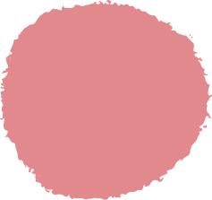
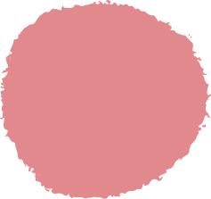

Prudence
A découvert depuis quelques années la mosaïque. Elle s’y adonne aussi régulièrement qu’aux conversations
en anglais qu’elle ne veut pas oublier car elles lui rappellent son enfance. C’est avec un enthousiasme
égal qu’elle concocte de petits plats qu’elle aime à partager en famille ou entre amis en organisant des
repas « aux petits oignons. »
 

Bélisaire
Tout le temps en mouvement, est un passionné de botanique depuis toujours et exerce ses talents au
sein de cette propriété familiale qu’il embellit au fil des ans. Il partage cette passion avec
l’histoire médiévale faisant partie d’une association historique qui l’ont conduit de temps en temps à
devenir guide bénévole à la citadelle de Blaye.

L’Irlande étant à tous deux leur pays de prédilection ce sont des amoureux de musique celtique qui ne ratent pas une occasion d’en écouter ou d’aller assister à des manifestations.